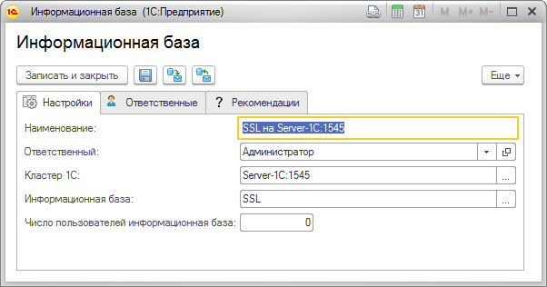

Данная форма позволит вам заполнить настройки информационной базы.
Для регистрации в ЦКК новой информационной базы необходимо воспользоваться справочником "Площадки эксплуатации". В группе команд "Добавить" необходимо выбрать пункт "Рабочий сервер 1С" или через контекстное меню " Добавить рабочий сервер 1С".. Откроется форма ввода параметров новой информационной базы.

Поля "Наименование" и "Кластер 1С" обязательны для заполнения. Наименование информационной базы можно ввести вручную или оно будет сформировано автоматически, после ввода данных в поле "Информационная база".
Рекомендованный порядок настройки информационной базы.
1. Выбрать кластер 1С:Предприятия из уже зарегестрированных и настроенных кластеров в ЦКК.
2. Выбрать или ввести вручную данные в поле "Информационная база в кластере". При правильной настройке кластера в ЦКК, список информационных баз кластера формируется автоматически с помощью подключения к кластеру.
После сохранения новой информационной базы ЦКК автоматически добавит все контрольные процедуры, которые необходимо выполнить для поддержания качества ее работы.